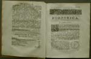
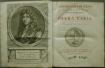
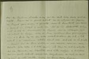
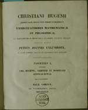
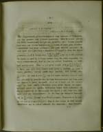
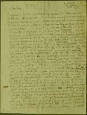

Christiaan Huygens. Facetten van een genie
De manuscripten
8 april 31 mei 2004
Tentoonstelling in de Universiteitsbibliotheek Leiden
8. Uitgaven en heruitgaven van Huygens’ werk (1703-1833)
Huygens is tijdens zijn leven opvallend terughoudend geweest met het publiceren van zijn werk. Wel had hij bij testament bepaald dat enkele geschriften alsnog uitgegeven moesten worden. In de achttiende en negentiende eeuw werden diverse werken van Huygens herdrukt, en werd een deel van zijn manuscripten voor het eerst in druk gegeven. Huygens’ wetenschappelijke erfenis werd met name door Leidse hoogleraren wis- en natuurkunde beheerd: B. de Volder (1643-1709), W.J. ’s Gravesande (1688-1742), P.J. Uylenbroek (1797-1844), later ook E.F. van de Sande Bakhuyzen (1848-1918) en H.A. Lorentz (1853-1928).
|  | 8.1. Christiani Hugenii Opuscula postuma,
quae continent dioptricam; commentarios de vitris figurandis;
dissertationem de corona & parheliis; tractatum de motu, de vi
centrifuga; descriptionem automati planetarii. Ed. B. de
Volder en B. Fullenius. Lugduni Batavorum 1703. [534 F 14] –– De verhandelingen over de lichtbreking door lenzen, over het slijpen van lenzen, over de corona’s en bijzonnen als optische verschijnselen en over botsende lichamen waren door Huygens zelf geselecteerd voor uitgave. De editeurs voegden hieraan nog toe: een werkje over centrifugale kracht en een beschrijving van een planetarium dat Huygens had laten maken voor Lodewijk XIV (thans in Museum Boerhaave). |
|  | 8.2. Christiani Hugenii Opera varia.
Lugduni Batavorum 1724. Ed. W.J. ’s Gravesande. [732 C 8] –– Eerste heruitgave van Huygens belangrijkste publicaties, verdeeld in vier boeken: opera mechanica (1-308), opera geometrica (309-520), opera astronomica (521-722), opera miscellanea (723-776), en voorafgegaan door een ‘Hugenii vita’. Vier jaar later bezorgde ’s Gravesande een nieuwe verzameling: Opera reliqua (1728), waarin een herdruk van de Opuscula postuma en een Latijnse vertaling van Huygens’ verhandelingen over licht en de oorzaak van de zwaartekracht, die eerder in het Frans gepubliceerd waren. |
|  | 8.3. P.J. Uylenbroek, Rapport uitgebracht aan
Curatoren der Hooge School te Leyden, 1823. [AC2 77 I] –– In 1822 hadden Curatoren Uylenbroek aangesteld als lector wis- en natuurkunde, en hem opgedragen om in de Huygenspapieren te zoeken naar notities en teksten die voor de natuurwetenschappen en hun geschiedenis van belang zijn. Nog geen jaar later bepleitte Uijlenbroek in dit rapport de uitgave van papieren met vroege bewijzen betreffende de door Huygens ontdekte eigenschappen van de kromme lijn en betreffende zijn botsingswetten, van papieren met Huygens’ laatste verbetering van de zee-uurwerken, en eventueel van zijn correspondentie met Leibniz en L’Hopitâl, over differentiaalrekening. Helaas werd alleen het laatste onderdeel van dit voorstel gerealiseerd. |
|  | 8.4. Christiani Hugenii
aliorumque seculi XVII virorum celebrium Exercitationes
mathematicae et philosophicae, ex MSS. in Bibliotheca Academiae
Lugduno-Batavae. Ed. P.J. Uylenbroek. Fasc. I, Continens
Chr. Hugenii, Leibnitii et Hospitalii epistolas mututas (Hagae
Comitum 1833). [536 E 2] –– Uylenbroeks uitgave van de brieven die G.W. Leibniz en L’Hôpital aan Huygens stuurden. Al in 1703 had De Volder tegenover Curatoren opgemerkt dat “wel meriteerde, dat met den druck wierde publyq gemaekt, maar dat hetselve by ’t leven van de opgemelte heeren niet gevoegelyk konde geschieden”. |
|  | |
|  | 8.5. Brief van G.W. Leibniz aan Chr. Huygens,
gedateerd 5 december 1690 (= OC 2639). [HUG 45] –– Leibniz hoopt Huygens te overtuigen van de kracht van zijn nieuwe rekenmethode (differentiaalrekening) en bespreekt daartoe enige problemen die hem door Huygens waren opgegeven. |
| vorige pagina | volgende pagina |